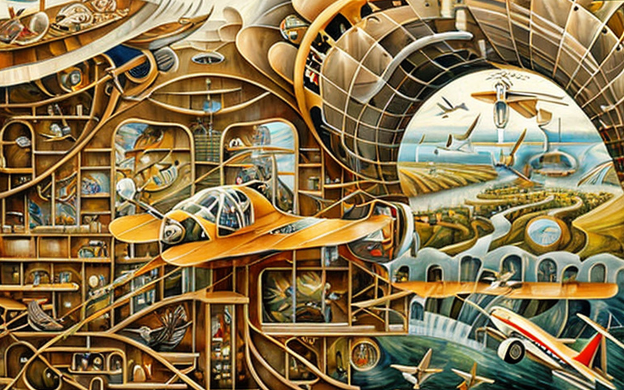
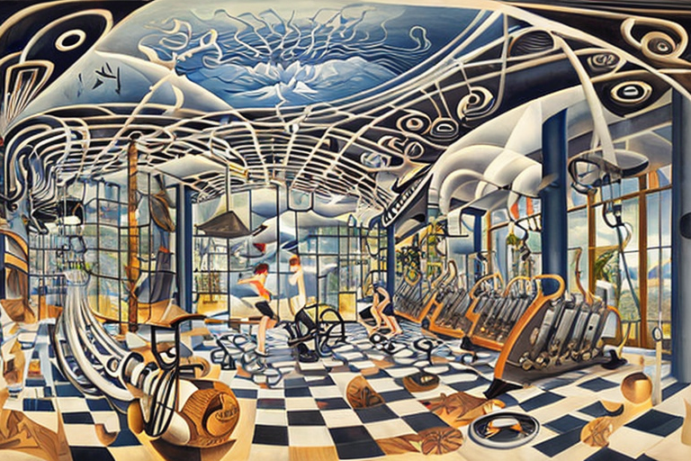
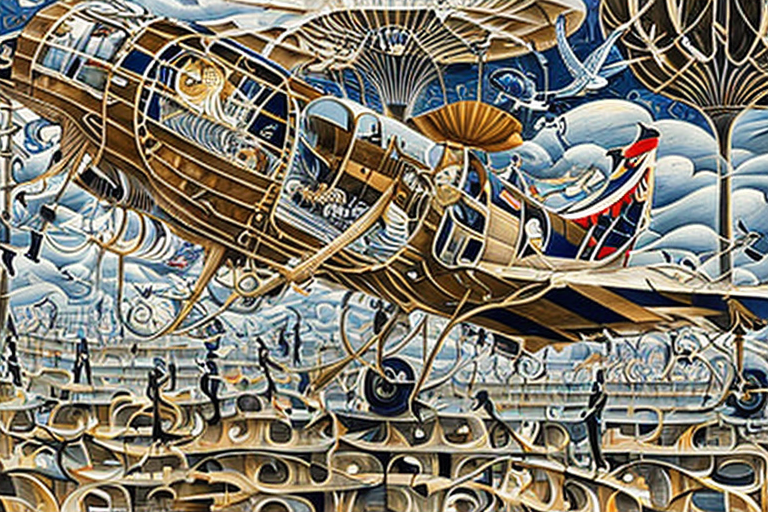

The aviation company and the golden airplane
HOME
Table of Contents
Golden Troubles

In the land of businessmen and aviation, there were two bigwigs of the airline industry, Tom and Jerry, who had founded their company on the principles of efficiency and innovation. Their airline was the talk of the town, as they always had the latest and greatest planes with state-of-the-art technology.
But one day, disaster struck. One of their planes, the prized possession of their fleet, had turned to gold! Yes, you heard it right - gold! King Midas, the wealthy king who had the power to turn anything he touched into gold, had been a passenger on the plane the day before.
Tom and Jerry were flabbergasted by this strange occurrence. How could they fly a plane made of gold? It was too heavy, too cumbersome, too impractical. They scratched their heads and wondered what to do next.
They called upon the best engineers and experts in the field of aviation to solve this dilemma. But to no avail. Nobody could figure out how to make this plane fly again. It seemed like the end of the line for their prized possession.
Tom and Jerry were devastated. They had invested so much in this plane, and now it was nothing but a heavy, useless piece of gold.
The Restoration of Flight
The enigma of the golden plane had stumped even the most seasoned engineers in the industry. But little did they know that the answer to their problem lay not in the realm of aviation, but in the mystical world of alchemy.
Tom and Jerry were at their wits’ end when a cloaked figure approached them. “I may be of some assistance,” he said in a deep, raspy voice. “I am an alchemist and have some experience with such phenomena.”
The two businessmen looked at each other in disbelief. Alchemy was a long-dead science, or so they thought. But desperate times call for desperate measures, and they decided to hear what the stranger had to say.
The alchemist examined the golden plane and discovered that the King Midas’ touch had indeed transformed the aluminum alloy into gold, but not in the way they had thought. The gold had not simply coated the surface of the metal; it had bonded with the aluminum on a molecular level, altering its density, strength, and conductivity.
The alchemist had seen this kind of transmutation before, and he knew how to reverse it. But it would require a delicate and intricate process that only a skilled alchemist could perform.
Tom and Jerry agreed to let the alchemist try his hand at the golden plane. They watched in amazement as he set to work, mixing strange concoctions and muttering incantations under his breath.
Days turned into weeks, and weeks turned into months, but the alchemist never gave up. He toiled tirelessly, testing and retesting his formulas until he finally found the one that worked.
The day finally arrived when the alchemist emerged from his laboratory with a glint in his eye. “It is done,” he said, holding up a small piece of metal. “I have succeeded in reversing the transmutation.”
Tom and Jerry were overjoyed. They had never been happier to see a plain old piece of aluminum in their lives. The alchemist had truly worked a miracle, and they knew they owed him a great debt.
The golden plane was restored to its former glory, but it was no longer made of gold. It was a sleek, lightweight airplane once again, with all the properties of the aluminum alloy that had been its original material.
Flight Risk: A Rapper’s Chain
After the incident with King Midas, Tom and Jerry were extra cautious about the weight of their planes. They made sure not to carry any gold as cargo and advised all their passengers to wear aluminum chains around their necks or nothing at all.
They even went so far as to send out a memo to all their employees, warning them of the dangers of carrying gold on board. “Gold is a heavy metal,” they wrote, “and it can cause serious problems with our planes’ aviation capabilities. We cannot afford to take any risks.”
But not everyone heeded their warning. One day, a famous rapper boarded one of their planes wearing a huge gold chain around his neck. Tom and Jerry were nervous, but the rapper just laughed it off. “I’m a baller, man,” he said. “I gotta show off my bling.”
The plane took off without incident, but as it reached cruising altitude, the pilot noticed something was wrong. The plane was flying slower than usual, and the engines were struggling to keep up.
Tom and Jerry were watching from the control room, and they knew exactly what was happening. “That damn rapper and his gold chain!” Tom exclaimed. “We warned him not to wear it on the plane.”
They radioed the pilot and told him to ask the rapper to take off his chain. The rapper was reluctant at first, but when he realized the plane’s safety was at stake, he reluctantly removed the chain.
To everyone’s relief, the plane’s engines suddenly roared to life, and it resumed its normal speed. The rapper was amazed. “Damn,” he said. “I didn’t know my chain was that heavy. Aluminum it is from now on!”
Wings of Wellness

Tom and Jerry were always looking for ways to improve their airline, and one day they stumbled upon a groundbreaking discovery. They found out that the less body fat their passengers carried on their bodies, the more lightweight the plane, and the less fuel it would need to fly.
This was a game-changer for their business. They could save money on fuel costs and increase their profits by encouraging their passengers to be healthier.
Tom and Jerry immediately put new health rules in place. Before passengers could board the plane, they would be weighed and their waist size measured. If they were deemed overweight or obese, they would be asked to lose weight or pay an extra fee for the added weight they were bringing onto the plane.
At first, passengers were outraged. They felt like their privacy was being violated and that the airline was discriminating against them. But Tom and Jerry stood their ground, insisting that they were just trying to make their airline safer and more efficient.
To incentivize their passengers to get healthier, they offered rewards for those who met certain weight and waist size goals. They also provided healthy meal options on their flights and even offered free gym memberships to their frequent flyers.
Slowly but surely, the passengers started to get on board with the new rules. They saw the benefits of being healthier not just for their own well-being but also for the environment and the airline’s bottom line.
Sky High Standards

“Look, I get it,” Tim Dillon said in one of his many rants on the subject. “We don’t want planes falling out of the sky, I get that. But you mean to tell me that the only people who can fly now are anorexic stick figures? That’s ridiculous!”
He went on to argue that the policy was not only discriminatory, but also dangerous. “You’re telling me that a plane full of anorexic people is somehow safer than a plane with a mix of different body types? That’s insane!”
He continued on, his voice rising in frustration as he spoke about the absurdity of the policy. “What about people who have medical conditions that make it difficult for them to lose weight? What about athletes who are naturally muscular and weigh more as a result? Are they just supposed to be grounded for life?”
He paused for a moment to catch his breath, then continued. “And what about the environmental impact of all this? Airlines are so petrophobic that they won’t even burn a little extra fuel to carry some extra weight? Give me a break!”
But despite his protests, the policy remained in place. Airlines were too afraid of burning a little extra fuel to accommodate larger passengers, and so the weight limit remained.
As a result, anorexia became the only way for many people to fly. They starved themselves in order to meet the strict weight requirements, sacrificing their health and wellbeing in the process.